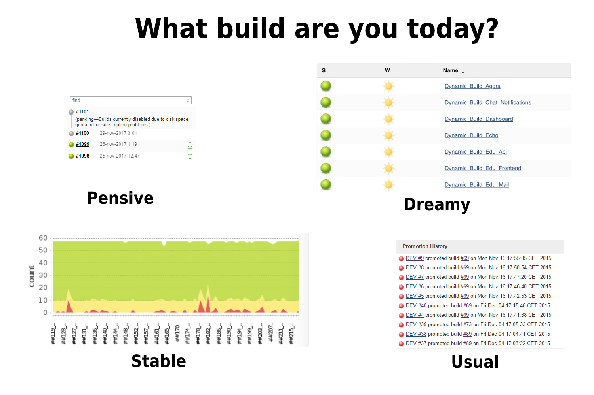
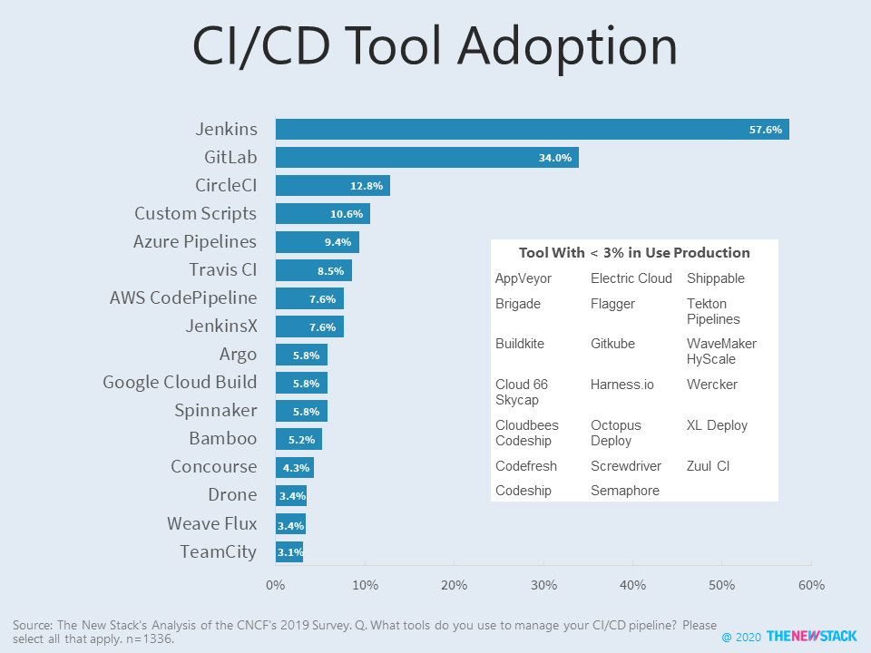
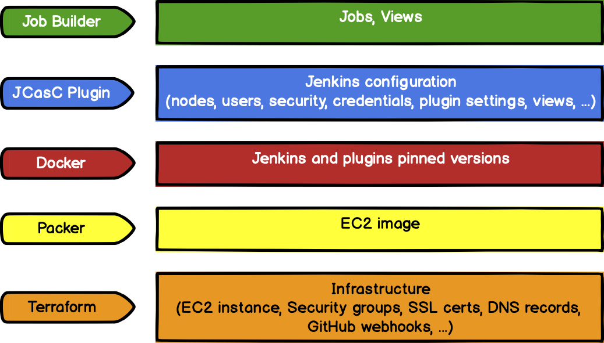
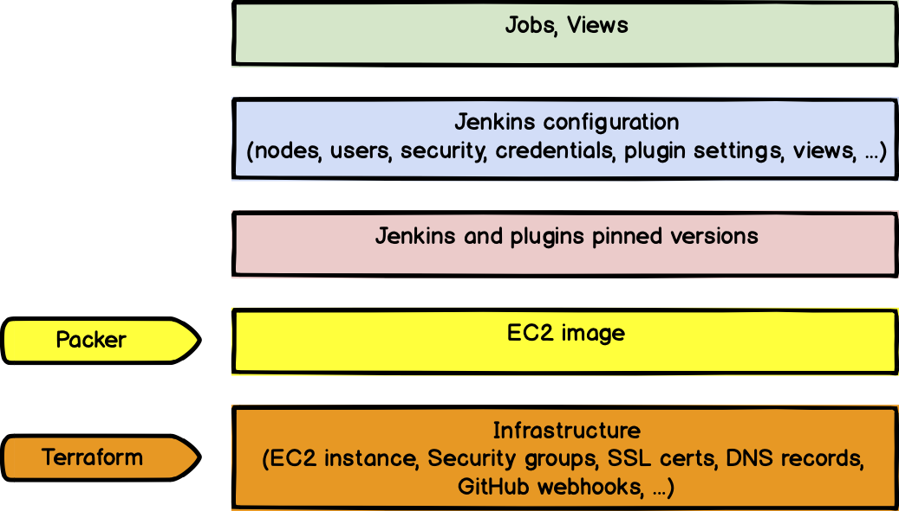
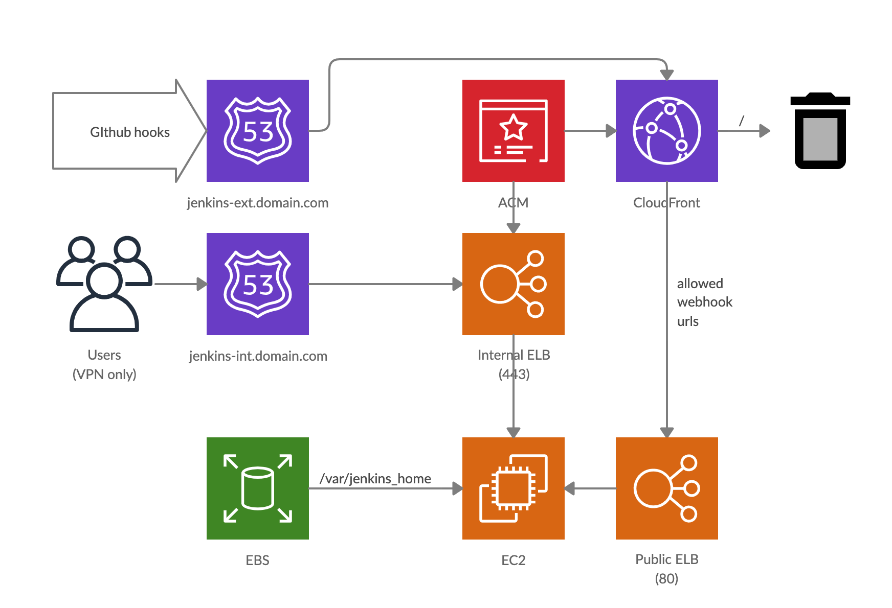
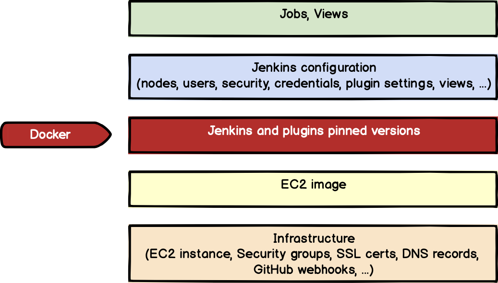
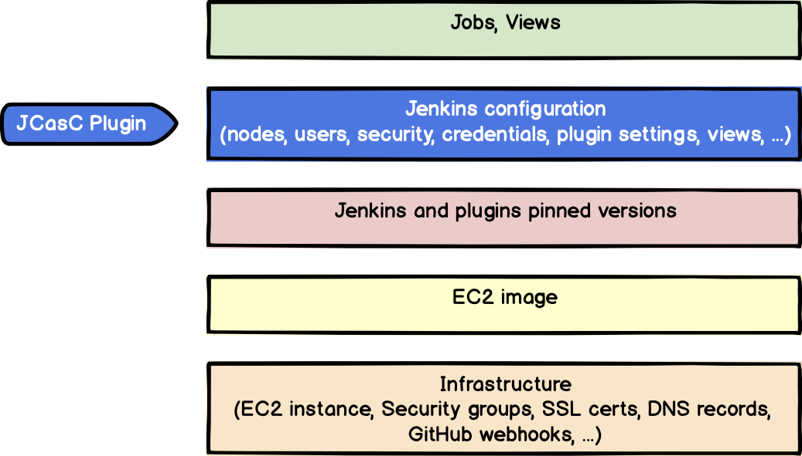
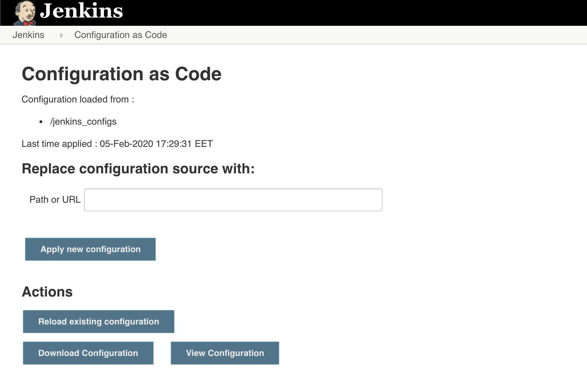
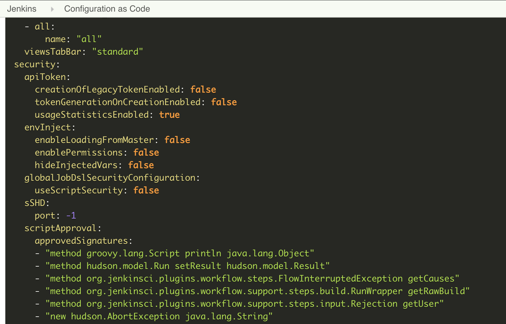
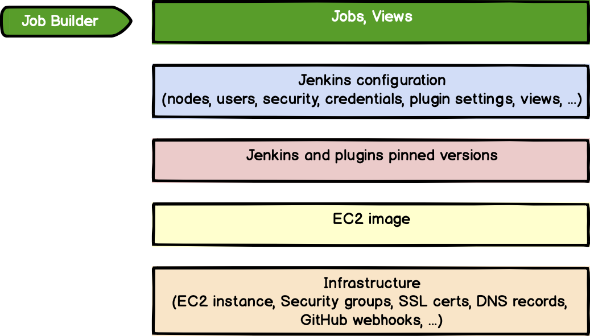

以代码的形式构建 Jenkins
在我们公司，我们尝试使用‘一切事物即代码’的模式，该模式涉及到可复制的基础架构，监控，任务等方面。但是，在这篇文章当中，我将向你展示怎样将这种模式运用到 Jenkins 上。是的，我的意思是对于 Jenkins 完全可复制的配置，以及基础架构、插件、凭据、任务以及代码中的其他东西。另外，这篇文章你将解惑下面的疑问:
-
我们的 Jenkins 已经变得更加稳定了吗？
-
我们可以频繁地改变 Jenkins 和任务配置吗？
-
升级 Jenkins 及其插件对我们来说是否不再是一种痛苦了呢？
-
我们是否已经管理了 Jenkins 上所有的变更？
-
故障发生后，是否我们可以快速的恢复 Jenkins？

我的名字叫 Amet Umerov 是一名 Preply.com 的DevOps 工程师。让我们开始吧！
前期介绍
当我们谈论 DevOps 工具，脑海中首先出现的是一个 CI/CD 系统。我们在 Preply 使用 Jenkins 因为我们每天有数以百计的任务，我们使用的许多特性在其他系统里面是没法提供的，即使提供了这些功能，也会是一些简化的功能。

我们想要让 Jenkins 以及基础架构、配置、任务和插件完全代码化。并且，我们之前有过在 Kubernetes 运行的经验，但是因为 Jenkins 架构以及我们自身的目的发现它并不适合我们。

这是我们想要实现的目标
为 Jenkins 构建底层架构

我们用的是 AWS 使用 Terraform 管理我们所有的基础架构还有其他一些来自于 HashiStack 的工具比如 Packer 或者 Vault。
就像我之前提到的，我们尝试使用 Kubernetes 来托管 Jenkins，但我们在扩展 PVC，资源还有一些没有经过深思熟虑的架构时遇到了问题。
这里，我们使用了 AWS 资源，比如 EC2 实例、SSL 认证、负载均衡、CloudFront 分配等。AMI 由完美集成了 Terraform 和 Vault 的 Packer 构建。
{
"variables": {
"aws_access_key": "{{vault `packer/aws_access_key_id` `key`}}",
"aws_secret_key": "{{vault `packer/aws_secret_access_key` `key`}}",
"aws_region": "{{vault `packer/aws_region` `key`}}",
"vault_token": "{{env `VAULT_TOKEN`}}"
},
"builders": [{
"access_key": "{{ user `aws_access_key` }}",
"secret_key": "{{ user `aws_secret_key` }}",
"region": "{{ user `aws_region` }}",
"type": "amazon-ebs",
"communicator": "ssh",
"ssh_username": "ubuntu",
"instance_type": "c5.xlarge",
"security_group_id": "sg-12345",
"iam_instance_profile": "packer-role-profile",
"ami_name": "packer-jenkins-master-{{timestamp}}",
"ami_description": "Jenkins master image",
"launch_block_device_mappings": [{
"device_name": "/dev/sda1",
"volume_size": 50,
"volume_type": "gp2",
"delete_on_termination": true
}],
"source_ami_filter": {
"filters": {
"virtualization-type": "hvm",
"name": "ubuntu/images/*ubuntu-bionic-18.04-amd64-server-*",
"root-device-type": "ebs"
},
"owners": ["099720109477"],
"most_recent": true
}
}],
"provisioners": [{
"type": "shell",
"environment_vars": ["VAULT_TOKEN={{ user `vault_token` }}"],
"scripts": ["packer_bootstrap.sh"]
}]
}
packer的配置是这样的
Bootstrap 文件 packer_bootstrap.sh 包含了在 AMI 预安装软件的所有命令。举个例子，我们使用 Docker、docker-compose 以及 vaultenv 或者安装 Datadog 节点用来监控。
考虑到这个 AMI 的架构，我们可以使用 Terraform、CloudFormation、Pulumi 甚至是 Ansible。这个是在 AWS 上使用 Jenkins 的可能会使用的架构之一。

用户通过内部 LB 访问 Jenkins，通过公共 LB 访问 GitHub webhook。
我们使用的 Jenkins 集成了 GitHub，所以我们应该通过外部网络为 Github 提供一些 Jenkins URL。有很多可操作的方案（IP 白名单，URL 或者令牌白名单，等等）而我们则结合 Cloudfront 以允许路径以及令牌验证。
做完这些事情之后，我们已经有一个现成的带有 AMI 的基础架构了。为监控提供了可能性以及用来获取公司凭据的 Vault 同样可以获得。
使用 Docker 管理 Jenkins 以及它的插件版本

好的，下一步就是 Jenkins 以及插件了。我们之前在升级 Jenkins 插件时遇到了很多问题，所以主要目标就是为它们固定版本。
这个时候 Docker 帮了我们大忙。我们使用事先构建好的 Jenkins 镜像用它作为我们安装的基础镜像。
FROM jenkins/jenkins:2.215
ENV CASC_JENKINS_CONFIG /jenkins_configs
USER root
# Install additional packages
RUN apt update && \
apt install -y python3 python3-pip && \
pip3 install awscli jenkins-job-builder jjb-reactive-choice-param --no-cache-dir
USER jenkins
VOLUME /jenkins_configs
VOLUME /var/jenkins_home
# Install plugins
COPY plugins.txt /usr/share/jenkins/ref/
RUN /usr/local/bin/install-plugins.sh < /usr/share/jenkins/ref/plugins.txt
我们为 Job Builder 安装了一些额外的安装包，我们后面会用到，还传递了一个数据卷用于 Jenkins 和安装插件。
我们在 https://our-jenkins-url/script 上得到的 Groovy 代码将其粘贴保存到 plugins.txt ，通过它我们可以很轻松的得到插件列表。
Jenkins.instance.pluginManager.plugins.each{
plugin ->
println ("${plugin.getShortName()}:${plugin.getVersion()}")
}
最后，docker-compose 配置在 Docker 中运行 Jenkins（我们还使用了 vaultenv 用来从 Vault 到 docker-compose 传递凭据）:
version: "3"
services:
jenkins:
build: .
container_name: jenkins
restart: always
ports:
- "50000:50000"
- "8080:8080"
volumes:
- ./configs/:/jenkins_configs/:ro
- ./jenkins_home/:/var/jenkins_home/:rw
environment:
- VAULT_TOKEN
- GITHUB_TOKEN
- AWS_ACCESS_KEY_ID
- AWS_SECRET_ACCESS_KEY
- JAVA_OPTS=-Xms4G -Xmx8G -Xloggc:/var/jenkins_home/gc-%t.log -XX:NumberOfGCLogFiles=5 -XX:+UseGCLogFileRotation -XX:GCLogFileSize=20m -XX:+PrintGC -XX:+PrintGCDateStamps -XX:+PrintGCDetails -XX:+PrintHeapAtGC -XX:+PrintGCCause -XX:+PrintTenuringDistribution -XX:+PrintReferenceGC -XX:+PrintAdaptiveSizePolicy -XX:+UseG1GC -XX:+ExplicitGCInvokesConcurrent -XX:+ParallelRefProcEnabled -XX:+UseStringDeduplication -XX:+UnlockExperimentalVMOptions -XX:G1NewSizePercent=20 -XX:+UnlockDiagnosticVMOptions -XX:G1SummarizeRSetStatsPeriod=1
volumes:
configs:
driver: local
jenkins_home:
driver: local
记住，一些 Java 参数可以帮助我们处理一些垃圾收集以及资源限制，这是很重要的。这篇文章在调节 Jenkins 这方面写的非常棒。
当然，我们可以在本地运行 Jenkins 安装插件，或者是新版本的 Jenkins。同样也很棒。
现在我们有了安装了插件的 Jenkins，甚至我们可以在本地运行以及轻松将其部署到生产环境。让我们为它多添加一些配置吧。
为主节点配置 Jenkins 即代码（JCasC）插件

Jenkins 配置即代码（JCasC）插件以一种可读性的格式存储配置。
这个插件可以让我们描述安全配置、凭据、插件配置、节点、视图以及很多其他的一些东西。
这个 YAML 配置文件分为 5 块:
-
credentials（系统凭据描述） -
jenkins（授权、云设置、全局参数、节点、安全领域以及视图） -
security（全局安全配置，比如脚本权限） -
tool（外部工具配置，比如 git，allure等） -
unclassified（其他配置，比如 Slack 集成）


我们可以从现有的 Jenkins 安装过程导入配置
它支持不同凭据提供者用来管理凭据，但是我们同样需要使用环境变量。
credentials:
system:
domainCredentials:
- credentials:
- usernamePassword:
description: "AWS credentials"
id: "aws-creds"
password: ${AWS_SECRET_ACCESS_KEY}
scope: GLOBAL
username: ${AWS_ACCESS_KEY_ID}
- string:
description: "Vault token"
id: "vault-token"
scope: GLOBAL
secret: ${VAULT_TOKEN}
...
我们还将 Amazon EC2 插件用于 AWS 上的自举代理，它的配置同样可以使用这个插件管理。基于矩阵的授权允许我们以代码的方式管理用户的权限。
jenkins:
authorizationStrategy:
projectMatrix:
permissions:
- "Overall/Administer:steve.a@example.org"
- "Credentials/View:john.d@example.org"
...
clouds:
- amazonEC2:
cloudName: "AWS"
privateKey: ${EC2_PRIVATE_KEY}
region: "${AWS_REGION}"
templates:
- ami: "ami-12345678"
amiType:
unixData:
sshPort: "22"
connectionStrategy: PRIVATE_IP
deleteRootOnTermination: true
description: "jenkins_agent"
idleTerminationMinutes: "20"
instanceCapStr: "100"
minimumNumberOfInstances: 0
mode: EXCLUSIVE
numExecutors: 1
remoteAdmin: "jenkins"
remoteFS: "/home/jenkins"
securityGroups: "sg-12345678"
subnetId: "subnet-12345678"
type: C52xlarge
...
我们还用了很多很酷的东西。如果我们有一个是测试 Jenkins 本地变更的流程，我们就可以在投入到生产环境之前发现和修复 bug。
所以我们安装了一个可复用的 Jenkins 配置，最后但并非不重要的是我们的任务
为自由风格任务集成 Job Builder

当我们讨论自由风格任务时，在 Jenkins 里有几种不同的方式来创建它们:
Jenkins Job Builder（JJB）可以让我们配置任务到一个可读的文本格式中（YAML 或者 JSON）。这样使用 SCM 管理这些任务时会非常舒服。基本上，我们可以使用 JJB 为我们的 CI/CD 工具创建一个 CI/CD 流程。
.
├── config.ini
├── jobs
│ ├── Job1.yaml
│ | ...
│ └── Job2.yaml
└── scripts
├── job1.sh
| ...
└── job2.sh
这里，我们可以在一个 Job1.yaml 的文件里描述任务的定义，任务步骤在脚本中（比如 job1.sh）。
- job:
name: Job1
project-type: freestyle
auth-token: mytoken
disabled: false
concurrent: false
node: jenkins_agent
triggers:
- timed: '0 3 * * *'
builders:
- shell:
!include-raw: ../scripts/job1.sh
这是一个配置文件的例子：
$ cat config.ini
[job_builder]
ignore_cache=True
exclude=jobs/Job2
[jenkins]
url=https://jenkins.example.org
user=some_user
password=some_password
$ jenkins-jobs --conf config.ini test -r jobs/
$ jenkins-jobs --conf config.ini update -r jobs/
在 jenkins 任务升级命令中它应该会被很轻松的运行
当然，我们的 Jenkins 用户需要有创建和配置任务的权限。我们只是需要在主节点上运行一个用来从 JJB 导入到 Jenkins 所有配置的子任务。
JJB 并不是灵丹妙药，因为仍有一些不是很常用的插件是不支持的。但是它仍是一个非常灵活的插件。另外，它可以使用 macroses 进行配置。
结论
现在我们已经看到了‘一切事物即代码’模式的一个大概的轮廓以及我们怎样使用 Jenkins，我们可以回到文章开头提到的那几个问题那里。你找到答案了吗？或许，显而易见了，5 个问题的答案都是 “yes”。
我们仅仅想同你一同分享我们的经验，这篇文章中参数配置以及 Jenkins 最佳实践我们没有深入展开讲。